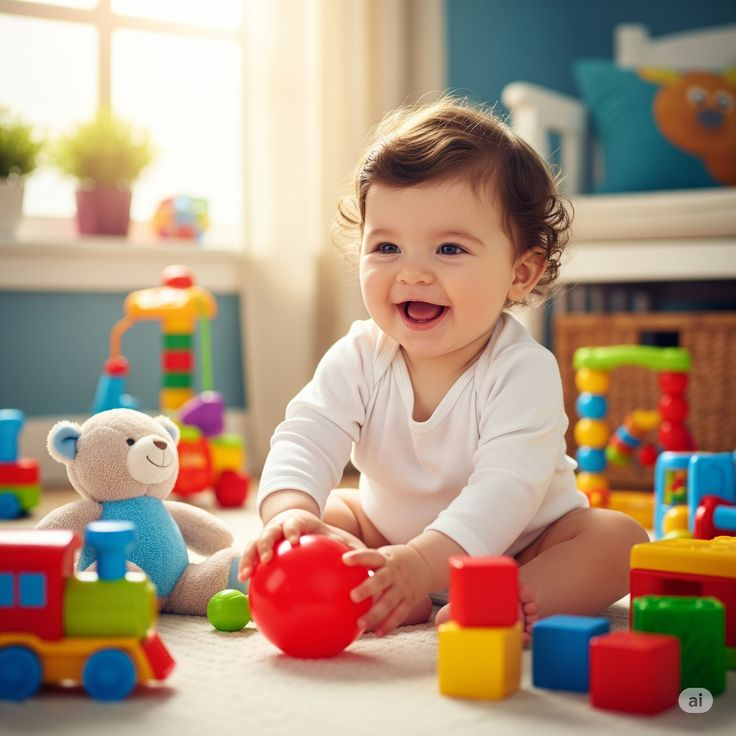
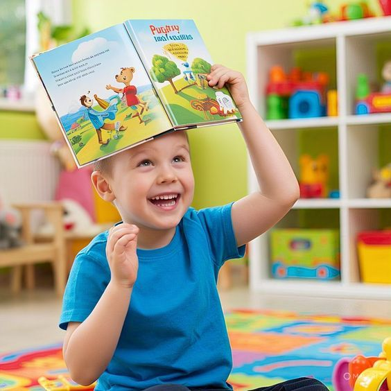
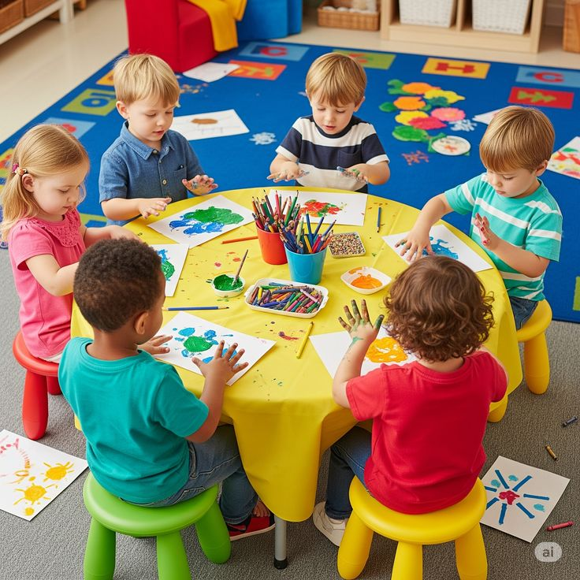

Atención personalizada
Reporte diario en app digital, citas de seguimiento y evaluaciones semestrales para cada alumno.
Un espacio único de educación inicial donde la música, las artes y el juego se convierten en el primer lenguaje de tus hijos. Desde 2013.

Somos un prekínder con enfoque musical para niñas y niños de 1 a 4 años. Nuestro modelo se basa en la neuroestimulación integral a través de la música, las artes y el juego, junto con bases socioemocionales claves durante la primera infancia.
Cada actividad, salón y momento del día está pensado pedagógicamente para acompañar a los niños en su primer encuentro con la vida escolar.
Reporte diario en app digital, citas de seguimiento y evaluaciones semestrales para cada alumno.
Somos expertos en el primer acercamiento a la vida escolar. Cercano, transparente, sin ansiedad.
Entre rutina y sorpresa, ayuda y autonomía, flexibilidad y límites. Una balanza para crecer.
Cada juego es una planeación pedagógica que persigue un objetivo de desarrollo claro.
Instalaciones, materiales y dinámicas pensadas para activar todos los sentidos. Más sentidos = mayor significado.
Cada salón está diseñado pedagógicamente para una dimensión del desarrollo infantil, siempre con la música como hilo conductor.
Desarrollo integral por medio de canciones, ritmos e instrumentos.
Técnicas, materiales y texturas que despiertan creatividad y psicomotricidad.
Coordinación, equilibrio y control del cuerpo a través del movimiento dirigido.

Lenguaje, lectura e imaginación a través de los libros y la narración oral.

Habilidades socioafectivas y juego simbólico en un mundo a su escala.
Un espacio abierto para correr, explorar y descubrir la naturaleza.
Primer contacto con la música, los sentidos y el vínculo con sus pares.
Exploración guiada, lenguaje, movimiento y autonomía con acompañamiento cercano.
Preparación para preescolar con pensamiento creativo, social y emocional.
Pasa el cursor o toca cada tecla. Así empiezan nuestros peques: descubriendo que cada sonido es una pequea conexión neuronal en construcción.
La música genera mayores conexiones neuronales que cualquier otro estímulo en la primera infancia. Por eso la ponemos al centro de todo lo que hacemos.
De norte a sur, estamos en las principales ciudades de México. Encuentra la sucursal más cercana y agenda tu visita.
"Mi hija entró a los 14 meses sin hablar y al mes cantaba canciones completas. Toma Nota cambió la forma en la que entendemos su desarrollo."
"El reporte diario y la cercanía de las maestras nos dio paz. Sentimos que conocen a Mateo como nosotros."
"Encontramos un lugar donde cada niño es visto como único. La música atraviesa absolutamente todo lo que hacen."
Agenda una visita guiada en la sucursal más cercana. Te recibimos con un café, un abrazo y mucha música.